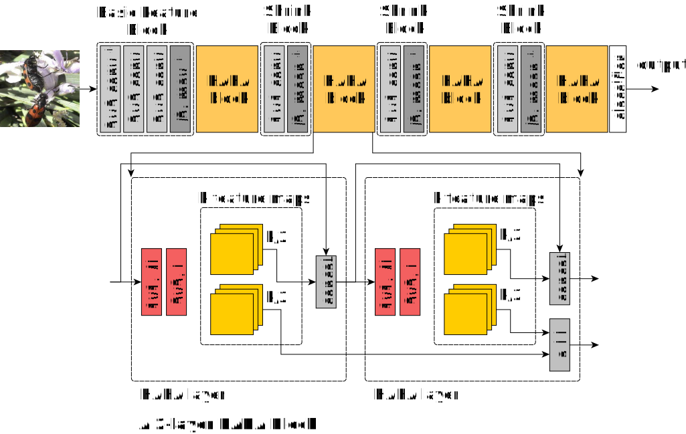

Recent studies on classification add extra layers or sub-networks to increase the accuracy of existing networks. More recent methods employ multiple networks coupled with varying learning strategies. However, these approaches demand larger memory and computational requirement due to additional layers, prohibiting usage in devices with limited computing power. In this work, we propose an efficient convolutional block which minimizes the computational requirements of a network while maintaining information flow through concatenation and element-wise addition. We design a classification architecture, called Half-Append Half-Add Network (HAHANet), built using our efficient convolutional block. Our approach achieves state-of-the-art accuracy on several challenging fine-grained classification tasks. More importantly, HAHANet outperforms top networks while reducing parameter count by at most 54 times. Our code and trained models are publicly available here.

Figure: Saliency maps produced by HAHANet on various images from different datasets. (Left) Saliency maps show that the color of the outer portion of the egg is important in differentiating between a boiled egg from a scotch egg (columns 1-2). (Middle) Body patterns are important in identifying insects, as seen in the saliency maps for beet flies (column 3), citrus flat mite (column 4), and ampelophaga (column 5). (Right) The shape of the hood in Volkswagen Beetle Hatchback is one of its notable features (column 6), while the top of the windshield is a prominent feature in convertible cars like the Fiat 500 and Audi S5 (columns 7-8).
Our Method
Half-Append Half-Add (HAHA) block implements efficient connections by appending half of the output as input to succeeding layers and propagates the rest through the network via element-wise addition, as shown below. HAHA block maintains strong information flow within the network while reducing its parameter count.
Figure: (Top) Half-Append Half-Add Network (HAHANet). The first four layers constitute the basic feature block which captures rudimentary features essential for classification tasks. Spatial resolution of the input image is reduced by shrink blocks placed between HAHA blocks. * means the stride is 2. (Bottom) Each HAHA layer produces k feature maps. The first k/2 output feature maps produced from the HAHA layer are concatenated with the first k/2 feature maps from the output of previous HAHA layers. The second k/2 output feature maps produced from the HAHA layer are added element-wise to the second k/2 feature maps from the output of previous HAHA layers.
Our Results
We evaluated our proposed model on various fine-grained classification datasets, such as Foodx-251, IP102, Logo2k+, Web-Aircraft, and Web-Car. Results of our experiments using two configurations of our proposed network are shown below. Our network surpasses the performance of current top classification architectures with larger network size, both single models and ensemble networks, while significantly reducing parameter count.
Figure: Classification results. Our HAHANet models outperform current state-of-the-art CNN architectures, both single models and ensembles, on different datasets from various domains while significantly reducing parameter count.
Cite Our Paper
@inproceedings{antioquia2023hahanet,
title={HAHANet: Towards Accurate Image Classifiers with Less Parameters},
author={Antioquia, Arren Matthew C and Cordel II, Macario O},
booktitle={Pacific-Rim Symposium on Image and Video Technology},
pages={246--258},
year={2023},
organization={Springer}
}